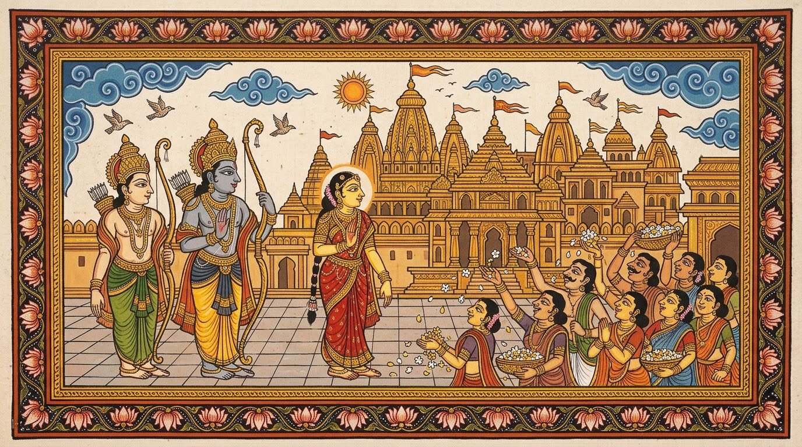

1
Chapter 1 of 12
Ayodhya
Long ago, in the golden city of Ayodhya in ancient India, lived Prince Rama: brave, gentle and loved by everyone. Beside him stood his wife, Princess Sita, and his loyal brother Lakshmana. Rama was to be crowned king the next morning, and the whole city filled the streets with flowers and song.